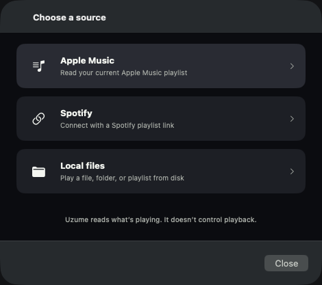
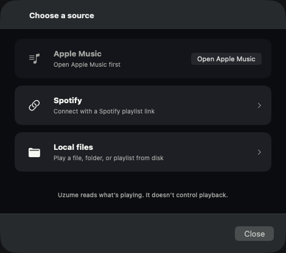
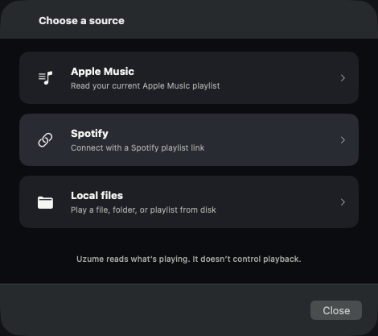
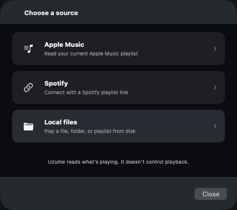

ConnectorTileView and the private LocalSourceActionTile are replaced by
one component. Two things to judge, both consequences of having one component instead of two.
1. The connector tiles now respond to hover. They had no hover state; the local
tiles did. Sharing one interactive treatment gives the connector tiles the lift the local tiles
always had.
2. The local tiles now announce a VoiceOver hint. "Opens a file chooser". They
announced nothing after their label before, while the connector tiles on the previous screen
announced one — so a Curator using VoiceOver got guidance on the first source screen and silence on
the second. This is the DECISION-NEEDED's default (option A); the wording is the part to judge.
Measured, not eyeballed.
Default states are pixel-identical before vs after inside the tile bands — the only
before/after difference is in rows 0–47, above the first tile, which is window-titlebar vibrancy
between two app launches. Hover changes exactly the hovered tile's band and nothing else, at
maxΔ 14/255 — which is precisely
--color-surface-selected #292b33 minus --color-surface-raised #1d1f25.
On main the three connector tiles are byte-identical hovered and unhovered; they had no
hover state at all.
Copy bug, found while capturing — not DS.2's to fix.
The footer under these tiles reads "Uzume reads what's playing. It doesn't control playback." That is
true for Apple Music and Spotify and false for the Local files tile directly above it:
on the local path Uzume owns the audio and ships a full transport (stop / previous / play-pause /
next, uzume.playback.lfTransport). DS.2 may not edit connector.picker.*
copy, so it is recorded as COPY-001.
VoiceOver — label, then hint
Tile
Before — main
After — DS.2
Δ
Apple Music (available)uzume.connector.tile.apple_music
Apple Music. Read your current Apple Music playlist Connect using this source
Apple Music. Read your current Apple Music playlist Connect using this source
unchanged
Apple Music (unavailable, with recovery)uzume.connector.tile.apple_music
Apple Music. Open Apple Music first Not available
Apple Music. Open Apple Music first Not available
unchanged
Spotifyuzume.connector.tile.spotify
Spotify. Connect with a Spotify playlist link Connect using this source
Spotify. Connect with a Spotify playlist link Connect using this source
unchanged
Local filesuzume.connector.tile.local_folder
Local files. Play a file, folder, or playlist from disk Connect using this source
Local files. Play a file, folder, or playlist from disk Connect using this source
unchanged
Folderuzume.lf_source.tile.folder
Folder. Read every supported file in alphabetical order — no hint announced —
Folder. Read every supported file in alphabetical order Opens a file chooser
gains a hint
Single fileuzume.lf_source.tile.file
Single file. .m4a, .mp3, or .flac — no hint announced —
Single file. .m4a, .mp3, or .flac Opens a file chooser
gains a hint
Playlistuzume.lf_source.tile.playlist
Playlist. .m3u or .m3u8 — no hint announced —
Playlist. .m3u or .m3u8 Opens a file chooser
gains a hint
OBSERVED, not derived — read live from the macOS accessibility tree of both builds (AXDescription = the VoiceOver label, AXHelp = the hint), before on main and after on this branch. Every label is byte-identical across the two builds; the three local tiles are the only rows that change, and they change by gaining a hint.
Apple Music — HOVER (the one intentional visual change)
before — mainafter — DS.2

The connector tiles had no hover state before. Sharing one interactive treatment with the local tiles means they now lift to --color-surface-selected on hover, exactly as the local tiles always have. This is what Matt is being asked to judge.
Apple Music — unavailable, with the Open Apple Music recovery
before — mainafter — DS.2

The .unavailable(reason:recovery:) affordance: the reason replaces the subtitle, the fill drops to --color-surface, there is no hover and no chevron, and the recovery button sits where the chevron would be. Requires Music.app to be closed.
Spotify — default
before — mainafter — DS.2
Spotify — HOVER (new)
before — mainafter — DS.2

Local files — default
before — mainafter — DS.2
Local files — HOVER (new)
before — mainafter — DS.2

Folder — default
before — mainafter — DS.2
Action affordance. Hover was already present here; it should look identical before and after.